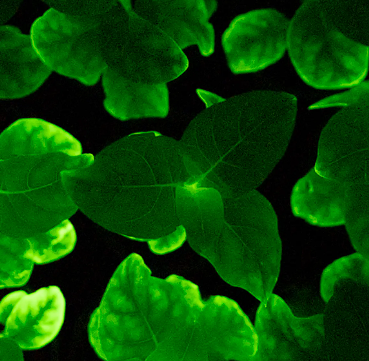

In this student biolab project we aim to genetically modify plant cells using a fungal bioluminescence system to generate a constant glow. In particular the caffeic acid cycle responsible for luminescence in N. nambi. The corresponding genes from N. nambi (nnluz, nnhisps, nnh3h and nncph) should be transformed via Agrobacterium (A. tumefaciens) into Arabidopsis thaliana, which is known for easy transformation. Later different plant species should be used, to show possible commercial uses. The Methodology follows a paper published in 2020 by the Sarkisyan lab. (1)
For the first iteration of the project we recreate the paper "Plants with genetically encoded autoluminescence" (1), from the Agl0 preperation stage onwards. This can be achieved by ordering the pX037 (encoding bioluminescence and kanamycin resistence) as well as the pN094 (encoding NpgA) plasmids provided by Karen Sarkisyan from Addgene(2)(3), and assemble them in the Agl0 strain, which can be selectivly grown using the kanamycine resistence on pX037. Agl0 naturally infects plants and inserts genes in the genome, this mechanism is used to bring the modifications to the caffeic acid cycle into the genome of Arabidopsis thaliana. Which then should glow at all stages of plant development.
To turn stab-cultures into a glycerol stock as well as prepare them for
minipreps, one first performs a clonal-step. In which the culture is streaked out on a
LB agar plate to isolate a single colony. Such a procedure is documented well on the
addgene website.
"Streaking and Isolating Bacteria on an LB Agar Plate"
To grow larger amount of bacteria as well as to assure plasmid selectivity, one can
inoculate a liquid culture of the bacteria overnight. We follow again the
protocol on the addgene website.
"Inoculating a Liquid Bacterial Culture"
Long term storage of plasmids in ecoli requires a glycerol stock.
Protocol on how to create a proper stock can be found on most websited
of plasmid providers.
"Creating Bacterial Glycerol Stocks for Long-term Storage of Plasmids"
To extract the plasmids out of the liquid bacterial culture one does a miniprep. The protocols for extraction are provided by the seller of the miniprep.
"Assembled plasmids were transferred into A. tumefaciens strain AGL0. Bacteria were grown in flasks on a shaker overnight at 28°C in LB medium supplemented with 25mg l-1 rifampicin and 50 mg l-1 kanamycin. Bacterial cultures were diluted in liquid Murashige and Skoog (MS) medium to an optical density of 0.6 at 600 nm. Leaf explants used for transformation experiments were cut from 2-week-old tobacco plants (N. tabacum cv. Petit Havana SR1, N. benthamiana) and incubated with bacterial culture for 20 min. Leaf explants were then placed onto filter paper overlaid on MS medium (MS salts, MS vitamin, 30 g l-1 sucrose, 8 g l-1 agar, pH 5.8) supplemented with 1 mg l-1 6-benzylaminopurine and 0.1 mg l-1 indolyl acetic acid. Two days after inoculation, explants were transferred to the same medium supplemented with 500 mg l-1 cefotaxime and 75 mg l-1 kanamycin. Regeneration shoots were cut and grown on MS medium with antibiotics."
[19/09/23] - The plasmids pN094 and pX037 are present at the student biolab as E. coli stab cultures.
[04/10/23] - Clonal step of the Plasmid containing Ecoli | autoclaving LB, Glycerol & preparing Antibiotic stock solution.
[05/10/23] - Innoculate single colony (for each plasmid) from day [04/10/23] over night.
[06/10/23] - Prepare glycerol stock and freeze, make minipreps of the plasmids.
.
(1) Plants with genetically encoded autoluminescence. Mitiouchkina T, Mishin AS, Somermeyer LG, Markina NM, Chepurnyh TV, Guglya EB, Karataeva TA, Palkina KA, Shakhova ES, Fakhranurova LI, Chekova SV, Tsarkova AS, Golubev YV, Negrebetsky VV, Dolgushin SA, Shalaev PV, Shlykov D, Melnik OA, Shipunova VO, Deyev SM, Bubyrev AI, Pushin AS, Choob VV, Dolgov SV, Kondrashov FA, Yampolsky IV, Sarkisyan KS. Nat Biotechnol. 2020 Apr 27. pii: 10.1038/s41587-020-0500-9. doi: 10.1038/s41587-020-0500-9. 10.1038/s41587-020-0500-9
(2) pX037 was a gift from Karen Sarkisyan (Addgene plasmid # 167156 ; addgene:167156; RRID:Addgene_167156)
(3) pN094 was a gift from Karen Sarkisyan (Addgene plasmid # 167155 ; addgene:167155; RRID:Addgene_167155)